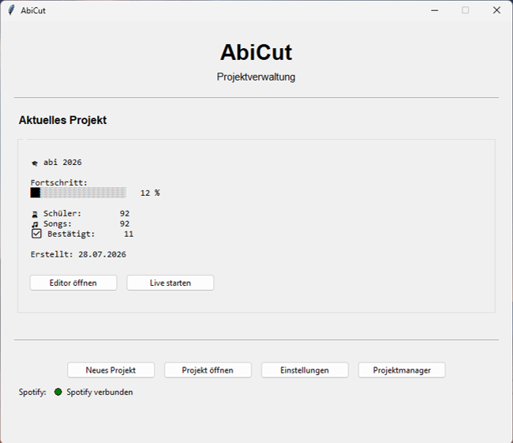
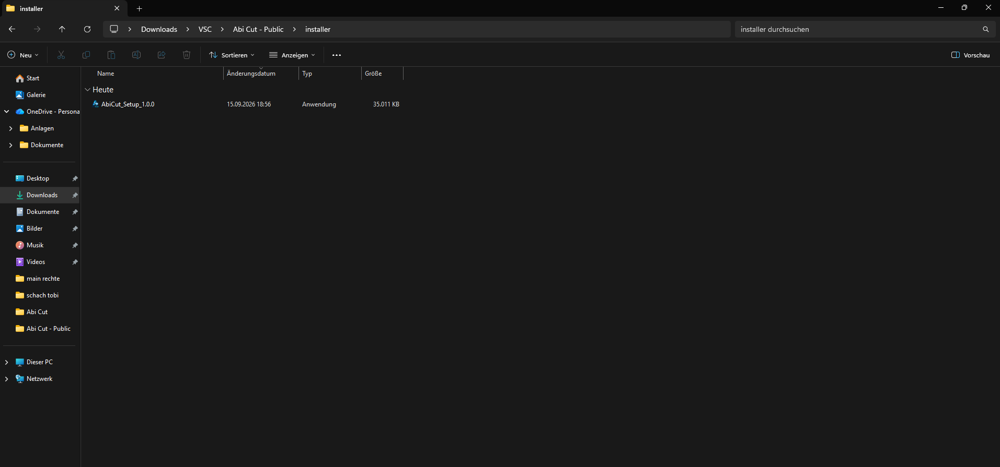
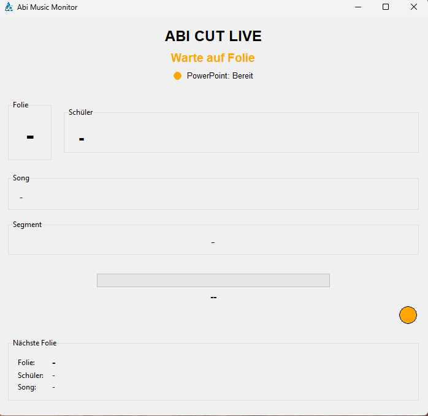
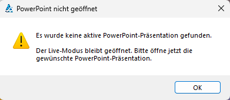

AbiCut.
Eine vollständige Windows-Desktop-Anwendung zur Vorbereitung, Steuerung und Überwachung von Musik und Präsentationsfolien bei einer Live-Veranstaltung – inklusive eigenem Installer, persistenten Projektdaten und robuster Live-Anbindung.
AbiCut wurde für die Abiturverleihung entwickelt, als fertige Anwendung an die Schule übergeben und durch die Schule bestätigt. Eine offizielle schriftliche Bestätigung wird zusätzlich als Bewerbungsnachweis ausgestellt.
Musik und Präsentation zuverlässig miteinander verbinden.
Bei der Abiturverleihung sollte zu den einzelnen Präsentationsfolien jeweils ein definierter Ausschnitt eines Songs abgespielt werden. Dafür mussten Songs vorbereitet, Startpunkte und Dauer festgelegt und die Abläufe während der Veranstaltung zuverlässig kontrolliert werden.
Aus dieser konkreten Anforderung entstand AbiCut – zunächst als kleines Tool und anschließend als vollständige Desktop-Anwendung mit Projektverwaltung, Editor, Spotify-Anbindung und Live Controller.
Ein neues Projekt lässt sich in wenigen Schritten einrichten.
Der Projekt-Assistent bündelt die benötigten Eingaben: Projektname, Klassenliste und Spotify-Playlist. Eine Klassenliste kann als Excel-Datei über die Datei-/Ordnerauswahl eingebunden werden, die Spotify-Playlist wird über ihren Link importiert. Die Anwendung übernimmt anschließend die Zuordnung und legt die Projektstruktur an.


Mehrere Projekte bleiben übersichtlich verwaltbar.
Im Projektmanager können unterschiedliche Projekte geöffnet, umbenannt, dupliziert oder gelöscht werden. Gleichzeitig werden wichtige Projektinformationen und der aktuelle Fortschritt angezeigt – ähnlich wie im Hauptmenü. So ist auf einen Blick erkennbar, wie weit ein Projekt vorbereitet ist und ob noch Einträge bearbeitet werden müssen.


Song und Zeitausschnitt werden gezielt bestätigt.
Im Editor wird festgelegt, welcher Ausschnitt eines Spotify-Tracks zu einer Folie gehört. Neben Startzeit, Dauer und Fades gibt es bewusst mehrere Kontrollschritte: Die aktuelle Spotify-Position kann übernommen, Start und Ende können gesetzt und der Ausschnitt per Testwiedergabe überprüft werden. Zusätzlich lässt sich die Folie explizit aktivieren. So kann vor dem Speichern kontrolliert werden, dass der richtige Song und der gewünschte Zeitausschnitt bestätigt sind.


Die Spotify-Anbindung und Standardwerte bleiben zentral konfigurierbar.
Die Einstellungen bündeln die für die Anwendung relevanten Spotify-Zugangsdaten sowie Standardwerte für Startzeit, Songdauer und Fades. Dadurch können wiederkehrende Abläufe projektübergreifend vorbereitet werden.

Aus dem Python-Projekt wurde eine installierbare Windows-Anwendung.
AbiCut wird als eigenständige Desktop-Anwendung ausgeliefert. PyInstaller bündelt die Anwendung, Inno Setup übernimmt die Installation inklusive Startmenü-, Desktop- und Deinstallations-Einträgen. Dadurch kann AbiCut auf einem Ziel-PC ohne Entwicklungsumgebung installiert und direkt genutzt werden.
Die öffentliche V1.0 enthält ausschließlich anonymisierte Demo-Daten, während die Schulversion getrennt davon mit dem realen Übergabeprojekt ausgeliefert werden kann.

Programmdateien und Nutzerdaten sind bewusst voneinander getrennt.
Die installierte Anwendung bleibt im Windows-Programmverzeichnis, während Einstellungen, aktuelles Projekt, Spotify-Authentifizierung und sämtliche Projektordner dauerhaft im Benutzerordner unter Documents\AbiCut liegen. Dadurch bleiben Projekte bei Updates oder einer Neuinstallation erhalten und können als kompletter Projektordner unkompliziert zwischen PCs übertragen werden.
Innerhalb eines Projekts werden Schüler, Folien, Songs, Zeitausschnitte und Statuswerte strukturiert in JSON gespeichert. So bleibt der Zustand nachvollziehbar und reproduzierbar.
Executable, interne Bibliotheken und gebündelte Ressourcen.
Kann durch Updates ersetzt werden.settings.json · current_project.txt · .spotify_cache · projects/
Bleibt unabhängig von der Installation erhalten.TECHNISCHE VERTIEFUNG — KLASSENSTRUKTUR ANZEIGEN
BaseWindow
├── StartScreen
├── GUI
├── SlideEditor
├── SettingsWindow
├── ProjectManager
├── ProjectWizard
└── Monitor
Main → StartScreen
StartScreen → ProjectController / SpotifyConnection
GUI → SlideEditor / SpotifyController / Utils
LiveController → Monitor / SpotifyController
ProjectWizard → ProjectController
ProjectManager → ProjectController
ProjectController → ProjectStatistics
SettingsWindow → SettingsManager
SpotifyController → SpotifyConnectionDer Live-Modus zeigt den Zustand der Präsentation sofort sichtbar an.
Die PowerPoint-Verbindung ist bewusst fehlertolerant aufgebaut: AbiCut kann den Live-Modus auch dann öffnen, wenn noch keine Präsentation aktiv ist, und versucht anschließend automatisch erneut zu verbinden. Eine Statusanzeige macht den Zustand direkt erkennbar.


Während der Veranstaltung zählt Übersicht.
Der Live Controller bildet den laufenden Zustand kompakt ab: aktuelle Folie, Schüler, Song, Segment, Fortschritt und Status. Die drei Zustände zeigen den Übergang von einer deaktivierten Folie über die laufende Wiedergabe bis zu einer noch nicht konfigurierten Folie.


Eine vollständige Desktop-Anwendung für den realen Einsatz.
AbiCut verbindet Softwareentwicklung, API-Integration, strukturierte Datenhaltung, Benutzeroberfläche und Live-Steuerung in einem eigenständig entwickelten System. Mit Version 1.0 verfügt die Anwendung zusätzlich über einen Windows-Installer, eigenes Branding, getrennte persistente Nutzerdaten, optionale Spotify-Konfiguration und eine robuste PowerPoint-Verbindungslogik. Die Anwendung wurde fertiggestellt und für die Übergabe an die Schule vorbereitet.